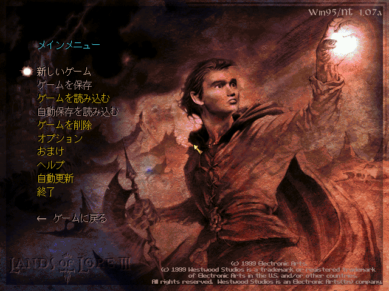
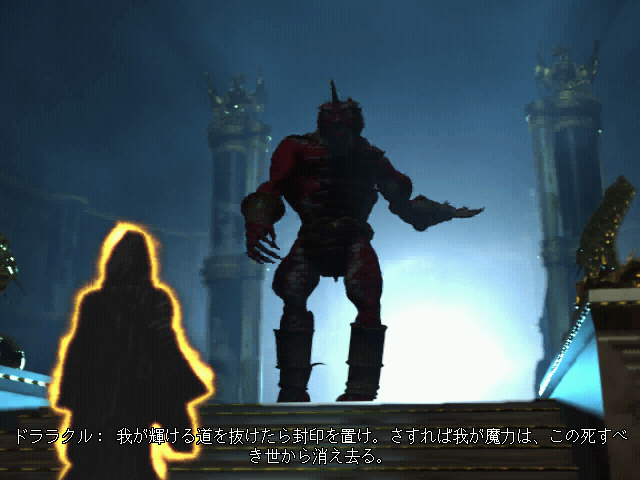
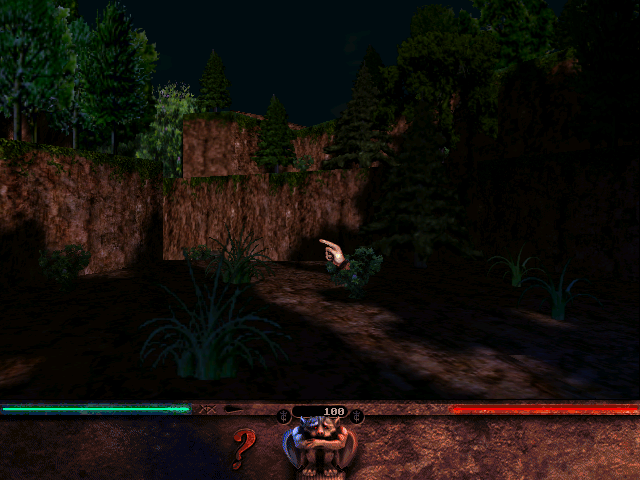
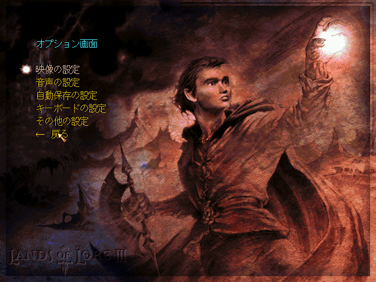
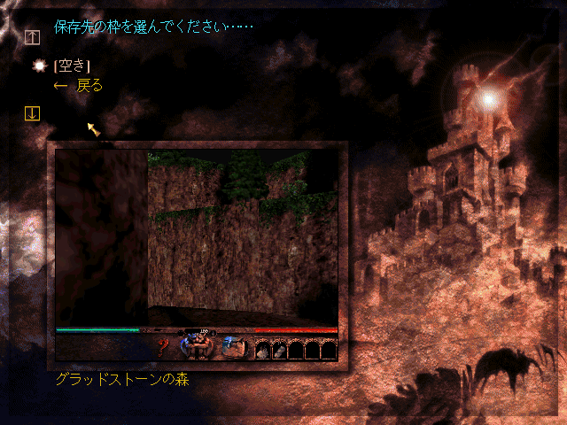
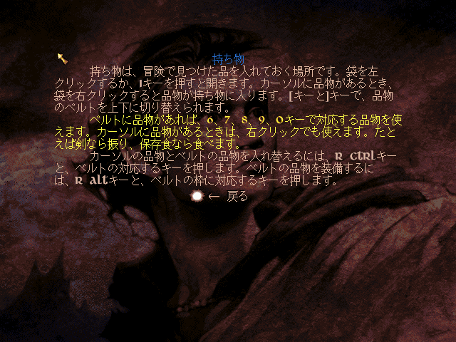

どんなゲーム？
ランズ・オブ・ロア3 は、1999年にウエストウッド・スタジオが発表したロールプレイングゲームです。
主人公コッパー・ルグレは、英雄エリック・ルグレの息子で、リチャード王の甥。 異界の門から現れた「裂け目の猟犬」に父と兄たちを殺され、自分の魂まで奪われてしまいます。 魂を取り戻すため、コッパーはグラッドストーンの戦士・魔術師・僧侶・盗賊のギルドに入り、使い魔を連れて、門の向こうに広がる世界を旅します。
画面は立体の一人称視点で、ほとんど全部の台詞に声が付いています。
Lands of Lore III
GOG.com 版の「Lands of Lore III」を日本語で遊べるようにする、非公式のファンメイドMODです。 会話の記録、品物・怪物・呪文・技能の説明、日誌、自動地図の地名、設定の画面、ヘルプ、操作の案内を日本語にしています。 声は英語のままですが、会話と動画の台詞には日本語の字幕が出ます。 ゲームのフォルダにファイルを置くだけで日本語になり、外せば英語に戻ります。
ランズ・オブ・ロア3 は、1999年にウエストウッド・スタジオが発表したロールプレイングゲームです。
主人公コッパー・ルグレは、英雄エリック・ルグレの息子で、リチャード王の甥。 異界の門から現れた「裂け目の猟犬」に父と兄たちを殺され、自分の魂まで奪われてしまいます。 魂を取り戻すため、コッパーはグラッドストーンの戦士・魔術師・僧侶・盗賊のギルドに入り、使い魔を連れて、門の向こうに広がる世界を旅します。
画面は立体の一人称視点で、ほとんど全部の台詞に声が付いています。






LandsOfLore3_JP.zip の中身を、ゲームのフォルダ（LOL3.EXE があるフォルダ）にそのまま展開します。LOL3.EXE と同じ場所に winmm.dll と LOL3JP フォルダが増えれば完了です。元からあるファイルを上書きすることはありません。ゲームのファイルは書き換えません。
winmm.dll と LOL3JP フォルダを消します。セーブデータは英語版と共通です。日本語版と英語版を行き来しても、続きから遊べます。
LOL3JP\lol3jp.ini の Subtitles=1 を Subtitles=0 にします。誤訳や不自然な訳に気づいたら、GitHub の Issues で教えてください。